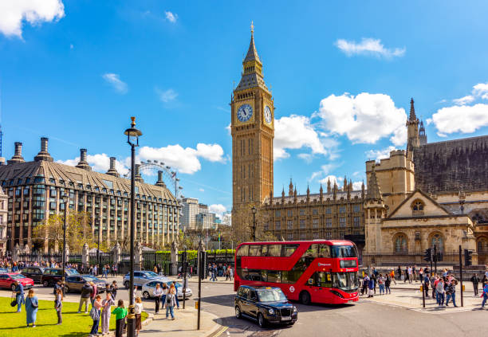
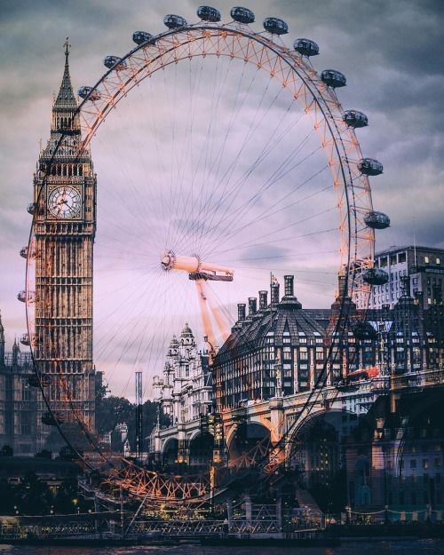
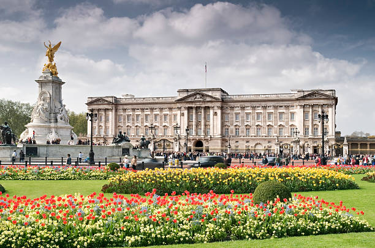
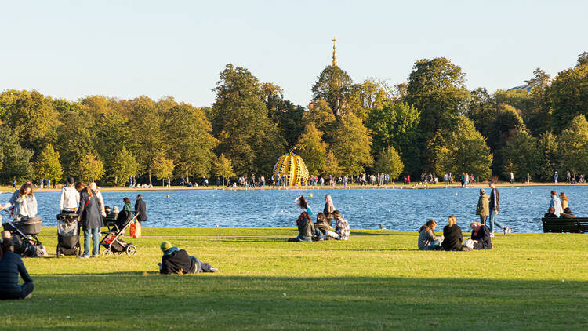

LONDYN
Rzym Sulejówek Londyn

Londyn – stolica i największe miasto Anglii i Wielkiej Brytanii, położone w południowo-wschodniej części kraju, nad Tamizą. Jest trzecim co do wielkości miastem Europy, po Moskwie i Stambule, a jednocześnie jednym z większych miast świata zarówno w skali samego miasta, jak i całej aglomeracji. Liczba mieszkańców Londynu (w granicach tzw. Wielkiego Londynu) wynosi ok. 8,982 mln (2019) na obszarze 1572 km²; cały zaś obszar metropolitalny Londynu w 2018 r. liczył prawie 12,5 miliona mieszkańców. Około 20% mieszkańców pochodzi z Azji, Afryki i Karaibów.
oko londynu

London Eye, znane też jako Millennium Wheel, to ikoniczny, 135-metrowy diabelski młyn (koło obserwacyjne) nad Tamizą w Londynie, otwarty w 2000 r.. Posiada 32 klimatyzowane kapsuły symbolizujące dzielnice Londynu, oferując 30-minutową, powolną przejażdżkę z panoramą 360° na miasto, w tym Big Bena i Opactwo Westminsterskie.
tower bridge

Tower Bridge to ikoniczny, zwodzony most w Londynie (ukończony w 1894 r.), łączący Tower Hamlets z Southwark. Charakteryzuje się dwiema 65-metrowymi wieżami w stylu wiktoriańskim, połączonymi kładkami dla pieszych (42 m n.p.m.) oraz ruchomymi przęsłami unoszonymi ~1000 razy rocznie dla statków. W wieżach mieści się muzeum i szklana podłoga.
buckingham palace

Pałac Buckingham w Londynie to oficjalna rezydencja i centrum administracyjne brytyjskiego monarchy od 1837 roku, symbolizująca monarchię. Obiekt, słynący z letniej zmiany warty, oferuje zwiedzanie 19 reprezentacyjnych sal (State Rooms), królewskich stajni (Royal Mews) i galerii sztuki. Posiada ponad 770 pomieszczeń, w tym prywatne kino i basen.
hyde park

Hyde Park to jeden z najsłynniejszych królewskich parków w centrum Londynu (City of Westminster), zajmujący ok. 140-159 hektarów. Otwarty dla publiczności w 1637 roku, oferuje liczne atrakcje: jezioro Serpentine, słynny kącik mówców Speakers' Corner oraz miejsca pamięci, jak Fontanna Diany.
corgi
Welsh Corgi (Pembroke lub Cardigan) to pochodząca z Walii rasa małych psów pasterskich, znana z niskiego wzrostu (ok. 25-30 cm), wydłużonego tułowia i "lisiej" głowy. Są inteligentne, energiczne i przyjazne, ale bywają uparte. Ukochane psy królowej Elżbiety II, idealne jako czujni towarzysze, wymagające jednak regularnego ruchu i intensywnej pielęgnacji z powodu linienia.